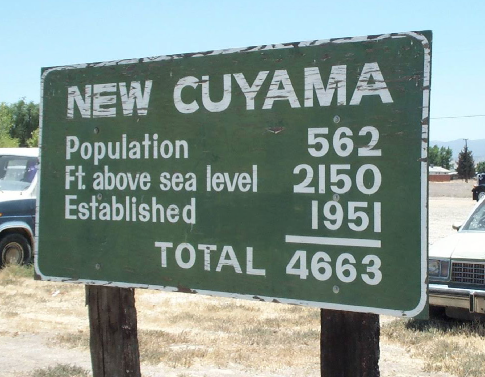
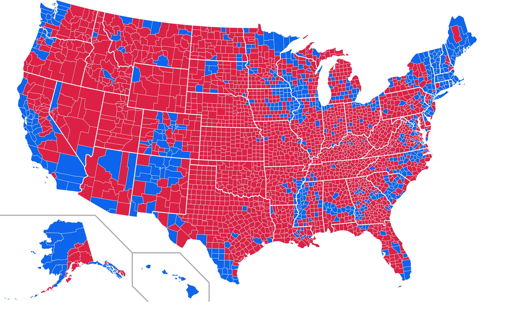
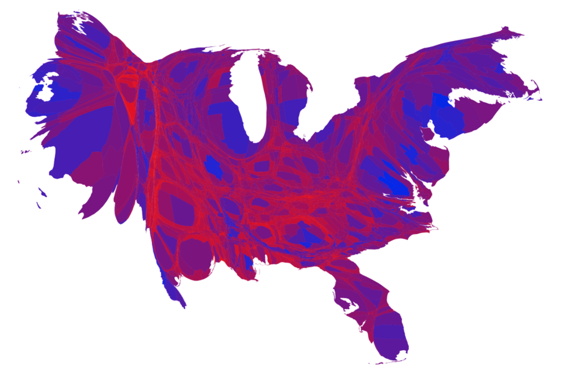
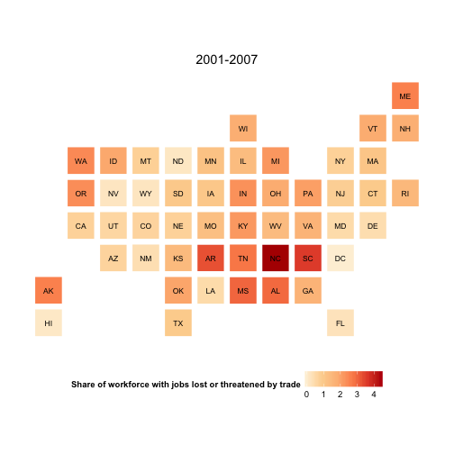
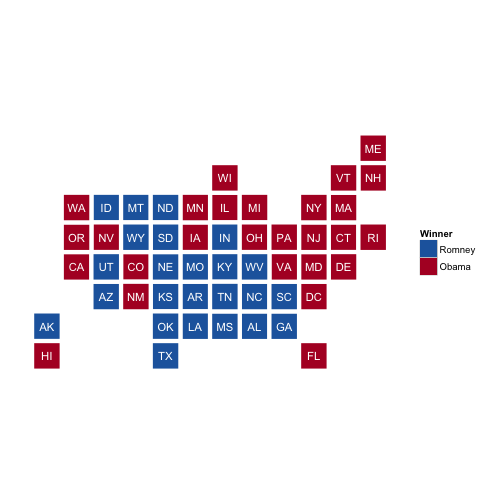

Maps
Data Visualization, Week 5
Kieran Healy, Duke University
Outline for Today
- Housekeeping
- Reviewing the Homework
- Git
- Maps
How to Navigate these Slides
- When you view them online, notice the compass in the bottom right corner
- You can go left or right, or sometimes down to more detail.
- Hit the
Escapekey to get an overview of all the slides. On a phone or tablet, pinch to get the slide overview. - You can use the arrow keys (or swipe up and down) in this view, as well.
- Hit
Escapeagain to return to the slide you were looking at. - On a phone or tablet, tap the slide you want.
Git
Git is Horrible
- But it can help you keep track of what you did
- It's also where a lot of software development happens
- So it's worth getting a feel for it
Simplest GitHub Use Case
- You have no account there.
- You download stuff from it.
Next Simplest GitHub Use Case
- You have an account there.
- You fork (i.e., copy) things on other people's GitHub accounts to your GitHub account.
- Then you clone (i.e., copy, or download) them to your laptop.
- This kind of confusing, doubled-up, garbage terminology is typical of Git.
Basic One-Person Regular Git Use Case
- You have a file under version control.
- You make a change to it and save the file.
- You stage or
adda snapshot of the changed files, - Then you
committhe snapshot of changes to the repository, with a message saying what you did.
Basic One-Person Regular Git Use Case
- You have a file under version control.
- You make a change to it and save the file.
- You stage or
adda snapshot of the changed files, - Then you
committhe snapshot of changes to the repository, with a message saying what you did. - You
pushthat change up to e.g. GitHub.
Tutorial
Data Manipulation

Maps
2012 US Election, Winner by State

2012 US Election, Winner by County

2012 US Election, Winner by County Share

2012 US Election, Color-Centered

2012 US Election, Color-Centered, Scaled by Population

2012 US Election, Electoral College Cartogram

Projections

Projections

Projections

America's Ur-Choropleths


Often, you don't need a 'real' map
Statebins, by Bob Rudis
devtools::install_github("hrbrmstr/statebins")
## Downloading GitHub repo hrbrmstr/statebins@master
## Installing statebins
## '/Library/Frameworks/R.framework/Resources/bin/R' --no-site-file \
## --no-environ --no-save --no-restore CMD INSTALL \
## '/private/var/folders/0c/hc2fp3hn3sl1r1pv973q5dsc0000gn/T/Rtmp6batHh/devtools1459e605ca68e/hrbrmstr-statebins-23d1e11' \
## --library='/Users/kjhealy/Library/R/library' --install-tests
##
## Reloading installed statebins
dat <- read.csv("http://www.washingtonpost.com/wp-srv/special/business/states-most-threatened-by-trade/states.csv?cache=1", stringsAsFactors=FALSE)
head(dat)
## fipst stab state workers1994 workers1995 workers1996
## 1 37 NC North Carolina 3831 2631 8716
## 2 1 AL Alabama 1504 3527 7627
## 3 28 MS Mississippi 1613 3344 4454
## 4 5 AR Arkansas 1376 1107 1473
## 5 47 TN Tennessee 3210 4149 7297
## 6 45 SC South Carolina 1991 1289 3422
## workers1997 workers1998 workers1999 workers2000 workers2001 workers2002
## 1 12324 9428 12414 4790 12596 19564
## 2 6858 5340 8697 3919 4400 9895
## 3 1938 3108 6143 2839 3292 4796
## 4 2426 2559 2653 604 3041 3741
## 5 7544 7435 5706 5107 7104 8137
## 6 975 3922 1739 2427 6296 6585
## workers2003 workers2004 workers2005 workers2006 workers2007 workers2008
## 1 21126 11435 13167 10602 14815 11767
## 2 3285 3156 1895 5358 4156 6377
## 3 3785 1350 1345 1807 2246 3366
## 4 3417 1093 2223 3781 4905 3220
## 5 7528 2673 6156 4849 8254 7262
## 6 5690 4623 5913 5270 3473 4479
## workers2009 workers2010 workers2011 workers2012 workers2013
## 1 11533 12746 4120 2953 3301
## 2 6661 5306 571 1033 834
## 3 3262 473 77 386 226
## 4 2891 3088 2239 3769 507
## 5 7647 7938 7100 2108 2606
## 6 5846 2575 1513 1864 1321
## share_cut1994 share_cut1995 share_cut1996 share_cut1997 share_cut1998
## 1 1.4 0.9 3.0 4.1 3.0
## 2 1.1 2.4 5.2 4.6 3.5
## 3 2.0 3.9 5.1 2.2 3.4
## 4 1.6 1.3 1.6 2.7 2.7
## 5 1.6 2.0 3.4 3.5 3.3
## 6 1.5 1.0 2.5 0.7 2.7
## share_cut1999 share_cut2000 share_cut2001 share_cut2002 share_cut2003
## 1 3.9 1.5 3.8 6.1 6.7
## 2 5.6 2.5 2.8 6.5 2.2
## 3 6.7 3.1 3.6 5.4 4.3
## 4 2.8 0.6 3.1 3.9 3.6
## 5 2.5 2.2 3.1 3.6 3.3
## 6 1.2 1.6 4.1 4.5 3.9
## share_cut2004 share_cut2005 share_cut2006 share_cut2007 share_cut2008
## 1 3.6 4.1 3.2 4.3 3.4
## 2 2.1 1.2 3.3 2.6 3.9
## 3 1.5 1.5 2.0 2.5 3.7
## 4 1.1 2.3 3.8 4.9 3.2
## 5 1.2 2.7 2.1 3.5 3.0
## 6 3.1 3.9 3.4 2.2 2.8
## share_cut2009 share_cut2010 share_cut2011 share_cut2012 share_cut2013
## 1 3.5 4.1 1.3 0.9 1.0
## 2 4.3 3.6 0.4 0.7 0.6
## 3 3.7 0.6 0.1 0.5 0.3
## 4 3.0 3.3 2.4 3.9 0.5
## 5 3.4 3.7 3.2 0.9 1.1
## 6 3.9 1.8 1.0 1.2 0.9
## avgshare avgshare94_00 avgshare01_07 avgshare08_12
## 1 3.56 2.53 4.56 2.64
## 2 3.22 3.55 2.95 2.58
## 3 2.94 3.77 2.99 1.71
## 4 2.89 1.91 3.27 3.16
## 5 2.86 2.64 2.77 2.85
## 6 2.61 1.60 3.57 2.14
p <- statebins(dat, "state", "avgshare94_00", breaks=4,
labels=c("0-1", "1-2", "2-3", "3-4"),
legend_title="Share of workforce with jobs lost or threatened by trade",
font_size=3)
p + theme(legend.position="bottom") +
ggtitle("1994-2000")

p <- statebins_continuous(dat, "state", "avgshare01_07",
legend_title="Share of workforce with jobs lost or threatened by trade",
brewer_pal = "OrRd",
font_size=3)
p + theme(legend.position="bottom") +
ggtitle("2001-2007")

library(httr)
library(dplyr)
election_2012 <- GET("https://raw.githubusercontent.com/hrbrmstr/statebins/master/tmp/election2012.csv")
results <- read.csv(textConnection(content(election_2012, as="text")),
header=TRUE, stringsAsFactors=FALSE)
results <- results %>%
mutate(color=ifelse(is.na(Obama), "#2166ac", "#b2182b")) %>%
select(state, color)
head(results, 15)
## state color
## 1 AL #2166ac
## 2 AK #2166ac
## 3 AZ #2166ac
## 4 AR #2166ac
## 5 CA #b2182b
## 6 CO #b2182b
## 7 CT #b2182b
## 8 DE #b2182b
## 9 DC #b2182b
## 10 FL #b2182b
## 11 GA #2166ac
## 12 HI #b2182b
## 13 ID #2166ac
## 14 IL #b2182b
## 15 IN #2166ac
results %>%
statebins_manual(font_size=4, text_color = "white",
labels=c("Romney", "Obama"),
legend_position="right",
legend_title="Winner")

US County Maps in R
From the Terminal
git clone https://github.com/kjhealy/us-county.git
- Or clone it in your browser, or git client